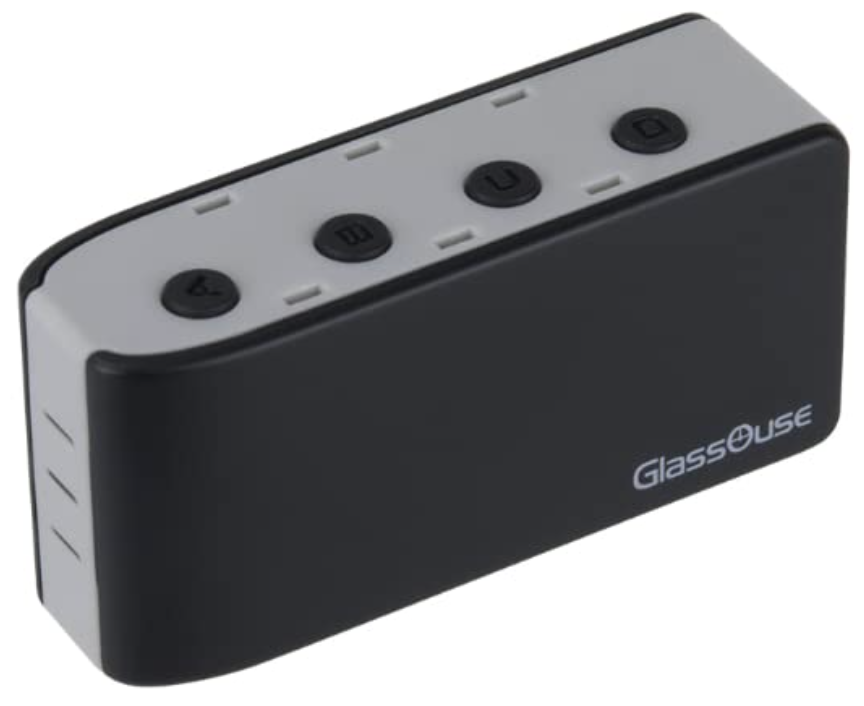
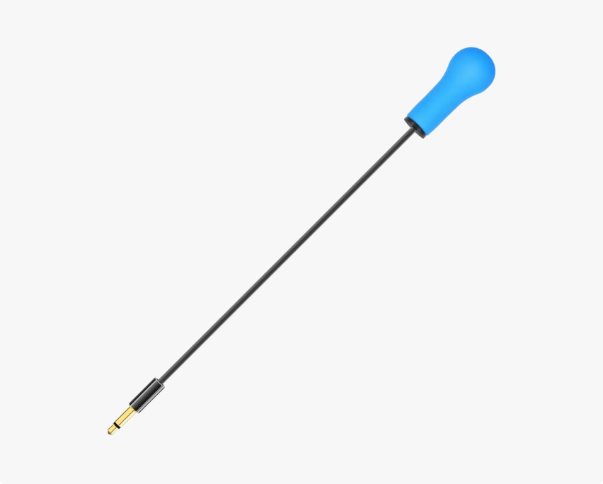
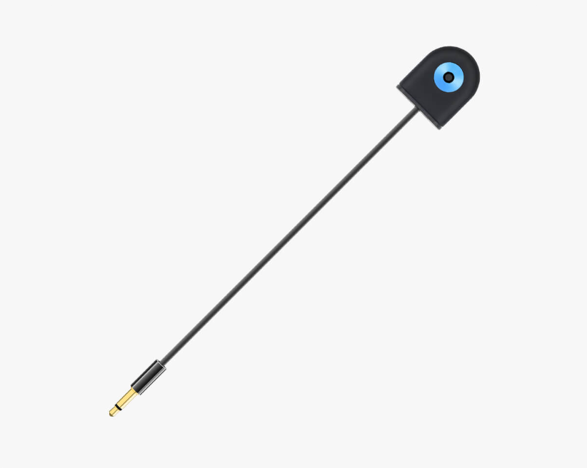
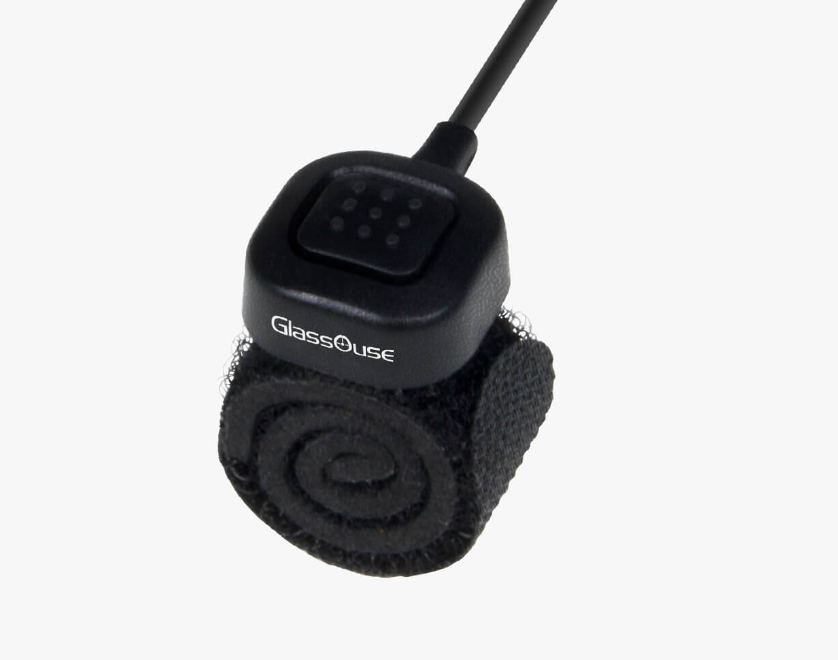
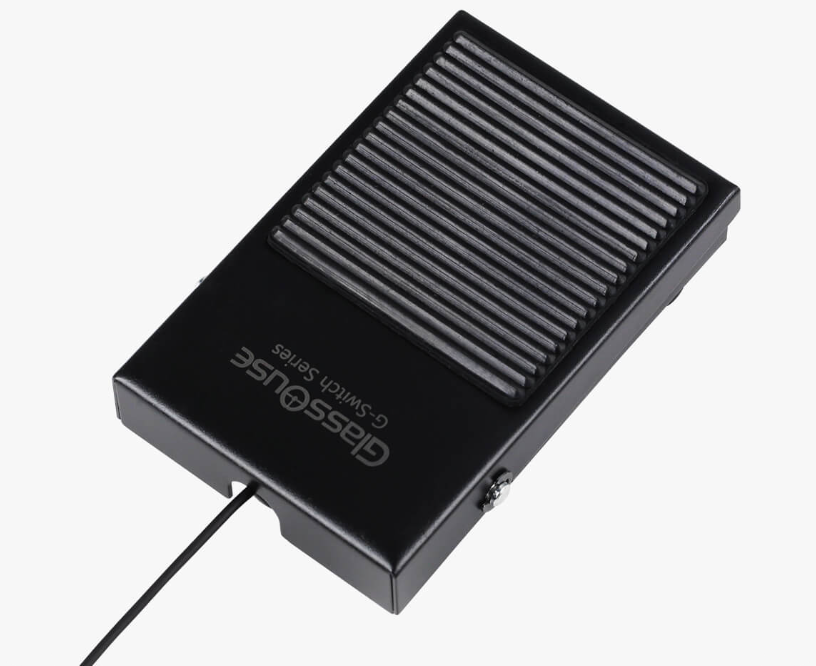
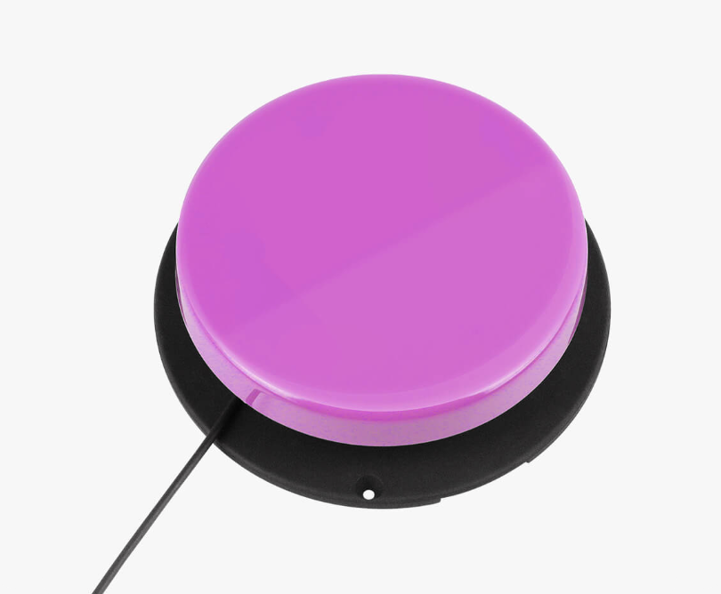
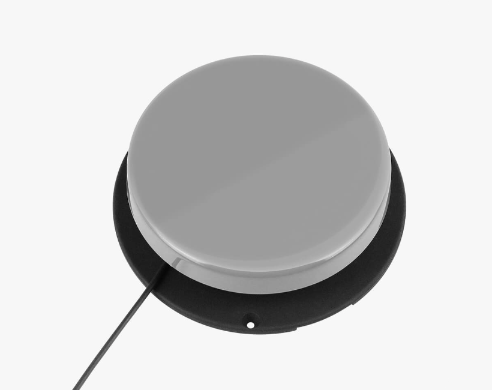
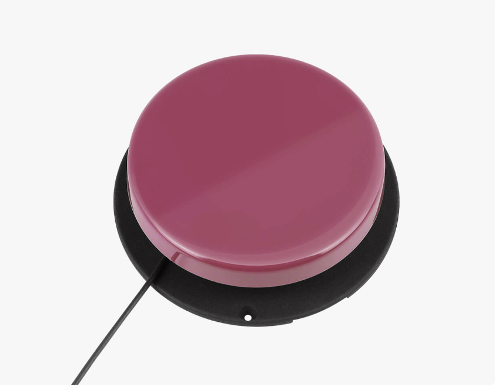
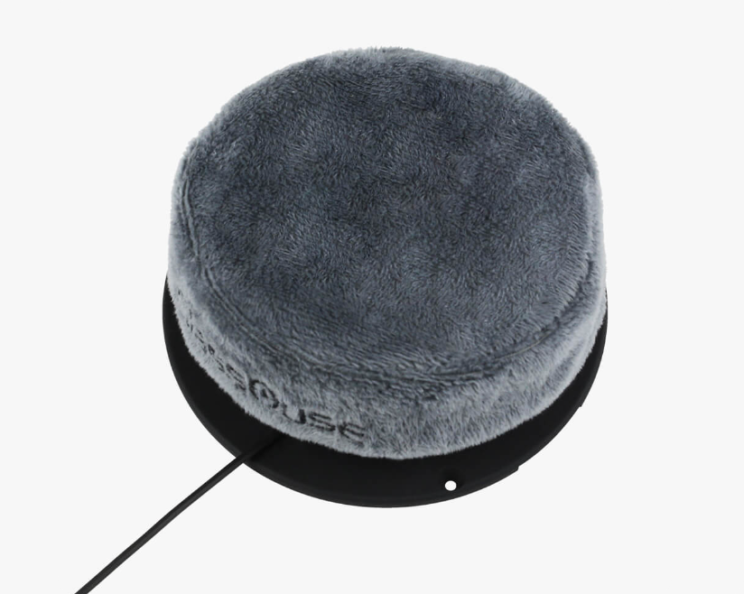
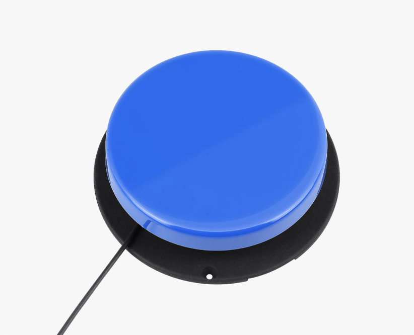

Introducción:
GlassOuse fabrica dispositivos de control para personas con limitaciones físicas, y sus productos se usan en 60 países. GlassOuse PRO ofrece más posibilidades de conexión y más funciones. Permite controlar un móvil, PC, tablet TV sin manos.
Se trata de un pequeño dispositivo que se coloca en la muñeca, o cualquier otra parte del cuerpo. Se encarga de controlar los múltiples accesorios disponibles.
Como cada persona tiene diferentes necesidades y limitacion hay una gran variedad de accesorios que pueden ser conectados. Se puede manejar hasta 3 dispositivos simultaniamente sin necesidad de utilizar las manos utilizando hasta 8 accesorios al mismo tiempo.
El posible controlar un movil, tablet, ordenador o Smart TV. Todo esto se puede controlar sin la necesidad de cables o perifericos.
Accesorios:
-
Bite Switch
 -
Puff Switch
 -
Finger Switch
 -
Foot Switch
 -
Press Switch 100gr
 -
Press Switch 150gr
 -
Pillow Switch
 -
Touch Switch
 -
Proximity Switch

Descripción de los accesorios:
Bite Switch
Es un interruptor flexsible que se activa cuando se presiona con el labio. Hecho de silicona, facil de cambiar y limpiar.
Puff Switch
Un interruptor que transforma los soplidos en clicks. Con ajuate de sesibilidad, se apaga después de una hora de inactividad.
Finger Switch
Boton que detecta diferentes tipos de presión, viene con una sujeción que hace que se pueda utilizar con cualquier parte del cuerpo.
Foot Switch
Un interruptor que puede ser accionado con el pie con diferentes niveles de presión
Press Switch 100gr
Un interruptor que se acciona con 100g de fuerza
Press Switch 150gr
Un interruptor que se acciona con 150g de fuerza
Pillow Switch
Un interruptor alcochado que se puede accionar con la cabeza, barbilla o mejilla.
Touch Switch
Es un interruptor de alta sensibilidad que puede detectar toques muy leves en cualquier parte de su superficie incluido los lados. Se apaga después de una hora de actividad.
Proximity Switch
Es un interruptor que funciona al acercarse a el, se apaga despues de una hora de interactivadad.